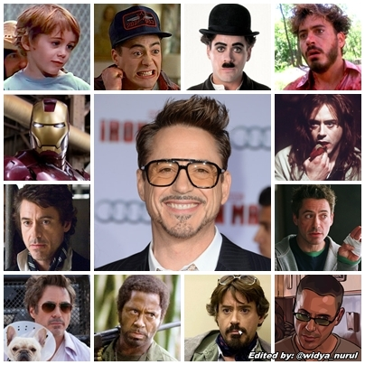

Robert Downey jr.

"I am IRONMAN", this line just made everyone cry on their seats when avengers endgame came out.
and we all know who was the reason, Ironman for sure. As much as we love the character we should
also appriciate it's actor Robert Jhon Downey Jr. .he was born on April 4, 1965. And he is an American actor and producer.
His career has been characterized by critical and popular success in his youth, followed by a period of substance abuse and legal troubles,
before a resurgence of commercial success in middle age. In 2008, Downey was named by Time magazine among the 100 most
influential people in the world, and from 2013 to 2015, he was listed by Forbes as Hollywood's highest-paid
actor. His films have grossed over $14.4 billion worldwide, making Downey the sixth-highest-grossing box office
star of all-time.
Early Life
At the age of five, he made his acting debut in Robert Downey Sr.'s film Pound in 1970. He subsequently worked with the
Brat Pack in the teen films Weird Science (1985) and Less Than Zero (1987). In 1992, Downey portrayed the title
character in the biopic Chaplin, for which he was nominated for the Academy Award for Best Actor and won a BAFTA Award.
Following a stint at the Corcoran Substance Abuse Treatment Facility on drug charges, he joined the TV series Ally
McBeal, for which he won a Golden Globe Award; however in the wake of two drug charges, one in late 2000 and one in
early 2001, he was fired and his character terminated. He stayed in a court-ordered drug treatment program shortly after
and has maintained his sobriety since 2003.
Downey gained global recognition for starring as Tony Stark / Iron Man in ten films within the Marvel Cinematic
Universe, beginning with Iron Man (2008). He has also played the title character in Guy Ritchie's Sherlock Holmes
(2009), which earned him his second Golden Globe, and its sequel, Sherlock Holmes: A Game of Shadows (2011).

Career
In 2007, Downey was cast as the title character in the film Iron Man, with director Jon Favreau explaining the
choice by stating: "Downey wasn't the most obvious choice, but he understood what makes the character tick. He found a
lot of his own life experience in 'Tony Stark'."Favreau insisted on having Downey as he repeatedly claimed that
Downey would be to Iron Man what Johnny Depp is to the Pirates of the Caribbean series: a lead actor who could both
elevate the quality of the film and increase the public's interest in it. For the role Downey had to
gain more than 20 pounds (9 kilograms) of muscle in five months to look like he "had the power to forge iron".
Iron Man was globally released between April 30 and May 3, 2008, grossing over $585 million worldwide and receiving
rave reviews which cited Downey's performance as a highlight of the film. By October 2008, Downey had agreed
to appear as Iron Man in two Iron Man sequels, as part of the Iron Man franchise, as well as The Avengers, featuring the
superhero team that Stark joins, based on Marvel's comic book series The Avengers. He first reprised the role in a
small appearance as Iron Man's alter ego Tony Stark in the 2008 film The Incredible Hulk, as a part of Marvel Studios'
depicting the same Marvel Universe on film by providing continuity among the movies.

Famous Roles
- Tony Stark (Iron man)
- Sherlock Holmes
- Dolittle
- Chaplin
- Tropic Thunder
- The Judge
Awards
- Academy Awards
- BAFTA Awards
- Critics Choice Awards
- Golden Globe Awards
- MTV Movie Awards
- People’s Choice Awards
- Primetime Emmy Awards
- Saturn Awards
- Screen Actors Guild Awards
- Teen Choice Awards
Youtube
Instagram
IMDB
Wikipedia